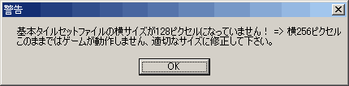

【事象】
|
横128または256(または320)のマップチップじゃないとダメといった内容のエラーについて紹介いたします。 マップチップを登録する際に、このエラーに遭遇するでしょう。(「◆違うマップチップ素材をゲームで使いたい」参照) 以下、確認事項を述べていきます。 |
 こんなエラーですね |
| 【1】今使おうとしている素材のサイズは？ マップチップを登録するときに、ベースマップの横のサイズを確認しましょう。 タイプA：横サイズが128ピクセルである タイプB：横サイズが256ピクセルである タイプC：横サイズが320ピクセルである (タイプX：上記のいずれでもない) |
| 【2】現在の解像度設定は？ 解像度設定(ゲームの基本設定から)はどれでしょうか。 タイプa：320×240になっている タイプb：640×480になっている タイプc：800×600になっている |
| 【3】 上記2つのタイプの組み合わせはどうなりましたか？ Aとa、Bとb、Cとcならば、正しい組み合わせなのでエラーは起こりません。 逆に言いますと、これ以外の組み合わせだとこのエラーに遭遇します。 |
| 【解決】 ゲームの基本設定を変えて回避します。 最も簡単なのは、ゲームの基本設定から、解像度の設定を変更して、「正しい組み合わせ」にします。 これでエラーは回避できます。 |
| ◆もし上記タイプ判定で、タイプXに当てはまったなら… 下記いずれかの可能性があります。 甲：ツクール規格の素材をそのまま登録しようとしています。 乙：自作マップチップで、サイズを間違って作成しています。 丙：オートタイルをマップチップに登録しようとしています。 甲の場合、素材変換ツール「tkool2WOLF+」を使用して、ウディタで使用できる形状にしてください。 詳細は「◆ツクール用サイズの素材をウディタに使いたい」を参照してください。 使用に際しては、「◆素材を使うためのルールってどんな感じなの？」も一読お願いします。 乙の場合、横サイズをもう一度確認の上、作成しなおしてください。 これについては「◆ﾏｯﾌﾟﾁｯﾌﾟ素材はどういう風に作ればいいの？」を参照してください。 丙の場合、本来登録すべきところがどこかを確認しましょう。 なお、サンプルに含まれる画像のうち[A]が付いているファイルが、オートタイルです。 マップチップとして登録するべき画像には[Base]が付いています。 |
| ◆オートタイルの類似エラー オートタイルですが、こちらはエラーが出ません。 ですが表示が意図通りにならない可能性があります。 規格があっているかは以下で確認します。こちらは縦のサイズを見ましょう。 タイプA：縦サイズが80ピクセルである タイプB：縦サイズが160ピクセルである タイプC：縦サイズが200ピクセルである (タイプX：上記のいずれでもない) 解像度設定は上記【事象】の2と同じです。 |
＜＜執筆者：ウディタ公式ガイド執筆コミュ。＞＞